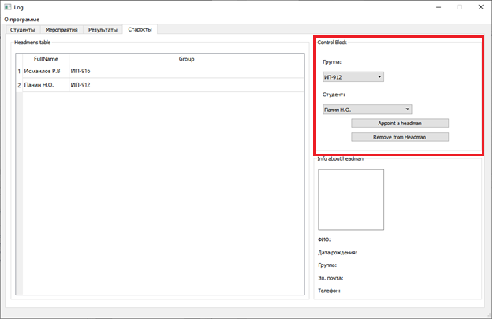
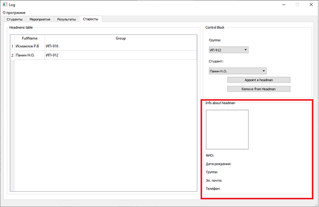

Вкладка старосты представляет из себя большое окно, в котором расположены старосты от каждой группы. Справа распологается блок управления, где мы можем выбрать определенную группу и человека из этой группы и назначить его старостой, или же удалить текущего старосту для добавления нового.

Ниже распологается краткая информация о старосте.
